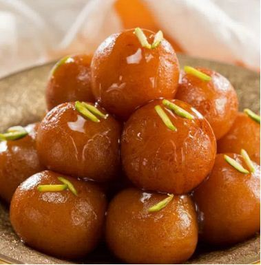
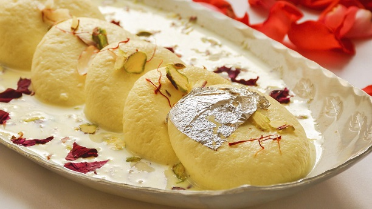

GULAB JAMUN
Ingredients :
1.Milk Powder
2.Flour/Maida
3.Baking Powder
4.Ghee/Butter
5.Sugar Syrup
6.Saffron Strands
Recipe :
1.Mix Milk Powder and flour and knead into a Dough
2.Prepare Sugar Syrup with sugar water and saffron
3.Shape the Dough into small balls and fry them
4.Soak these fried balls into warm sugar syrup
5.Garnish it with chopped nuts, Enjoy !!

KAJU KATLI
Ingredients :
1.Cashew nuts(kaju)
2.Sugar
3.Ghee
4.Water
5.Cardamom Powder
6.Edible Silver Foil
Recipe :
1.Grind cashews into a fine powder.
2.Make a one-string sugar syrup.
3.Mix cashew powder and cardamom into the syrup.
4.Cook until a thick, pliable dough forms
5.Cut it and garnish with silver foil and Serve..!

RAS MALAI
Ingredients :
1.Paneer Dumplings
2.Milk
3.Chopped Dryfruits
4.Cardamom
5.Saffron Strands
6.Sugar water
Recipe :
1.Boil milk, add lemon juice, strain to make paneer.
2.Shape paneer into dumplings and cook in sugar syrup
3.Boil milk with sugar, cardamom, and saffron
4.Soak cooked paneer dumplings in milk syrup.
5.Garnish with chopped dryfruits, serve chilled..!
